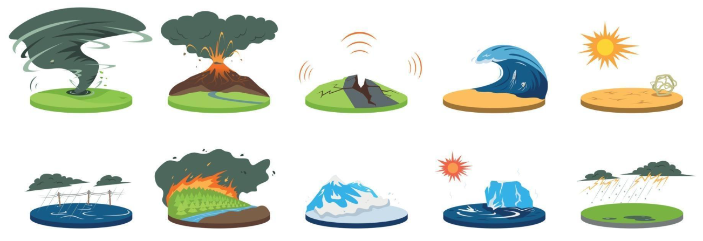
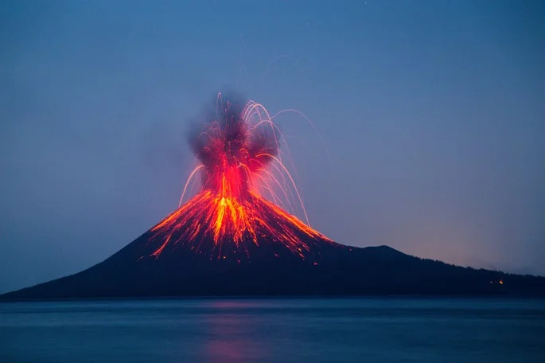
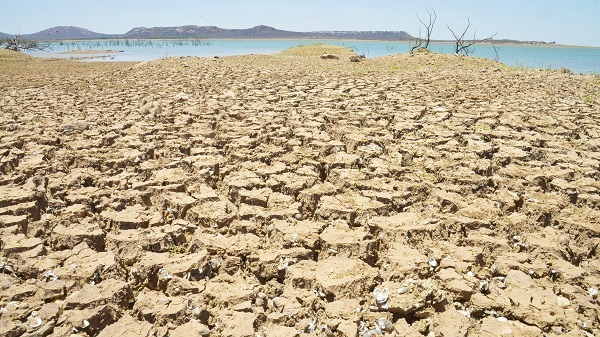
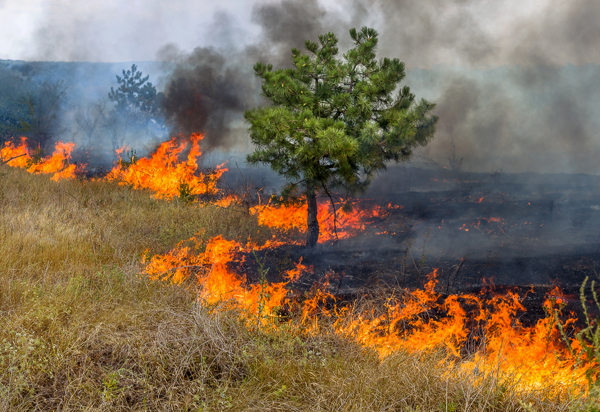
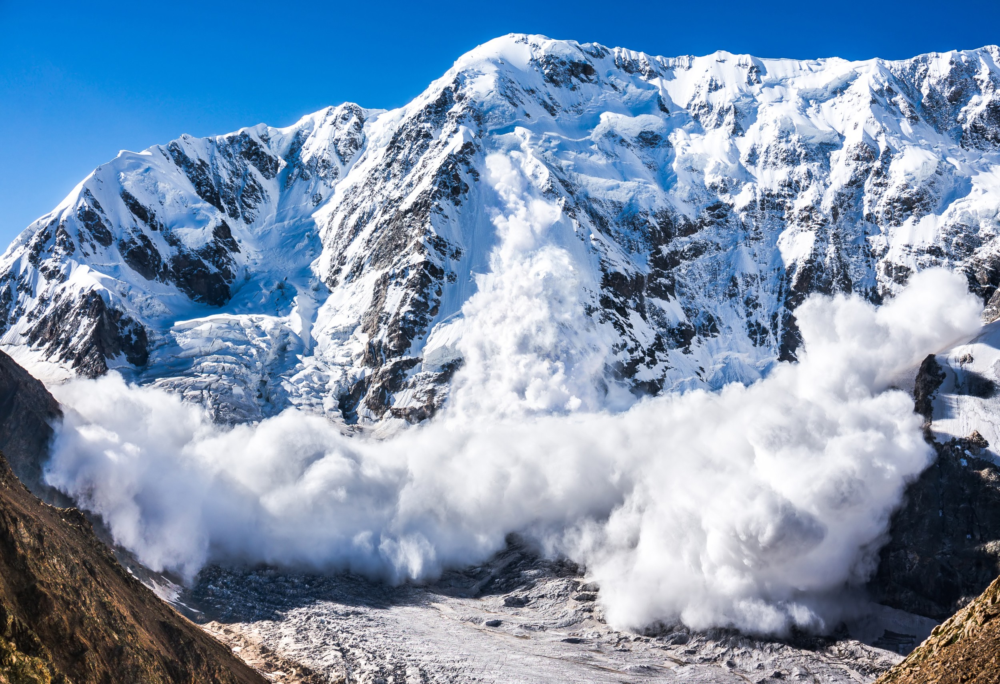

🖱️ Clique em cada desastre natural.


Tornado é um fenômeno atmosférico associado a uma nuvem de tempestade e condições muito instáveis de tempo. É caracterizado por um funil formado a partir de ventos que giram em alta velocidade em torno de um centro de baixa pressão. Quando o funil toca o solo, o fenômeno recebe o nome de tornado. Embora tenham curta duração, os ventos dos tornados podem superar a velocidade de 400 km/h, adquirindo grande poder de destruição.

Uma erupção vulcânica é um evento geológico dramático que ocorre quando magma, gases e fragmentos de rocha são expelidos de um vulcão. Essas erupções podem variar amplamente em intensidade e características. Existem dois principais tipos de erupções: explosivas e efusivas. As erupções explosivas são violentas e lançam grandes quantidades de cinzas, gases e fragmentos de rocha para o ar, como ocorreu no Monte Santa Helena. Por outro lado, as erupções efusivas são mais tranquilas e caracterizadas pela emissão constante de lava fluida, como as observadas nos vulcões Kilauea e Mauna Loa, no Havaí.

Também chamados de abalos sísmicos, representam fenômenos de vibração brusca e passageira da superfície da Terra que ocorrem por meio da movimentação das placas rochosas, bem como da atividade vulcânica e dos deslocamentos de gases no interior da Terra. Os maremotos ou tsunamis são os terremotos que acontecem dentro dos mares, provocando imensas deslocações de água.

Tsunamis são ondas gigantescas causadas principalmente por terremotos submarinos, embora também possam ser gerados por erupções vulcânicas ou deslizamentos de terra. Essas ondas podem percorrer grandes distâncias no oceano, crescendo em altura à medida que se aproximam da costa, podendo causar enormes destruições em áreas litorâneas.

Intensificada com o aquecimento global, a seca tornou-se um problema enfrentado por muitos grupos pelo mundo. Dessa forma, as alterações climáticas demonstram que as ações humanas estão gerando problemas como a seca e consequentemente a expansão do processo de desertificação.

As enchentes ocorrem quando há um aumento significativo no volume de água em um rio ou outro corpo d'água, que acaba ultrapassando a capacidade de escoamento. Esse fenômeno pode ser causado por chuvas intensas, desmatamento ou ocupação inadequada do solo. As enchentes podem causar danos significativos a áreas urbanas e agrícolas, além de representar riscos à vida humana.

A queimada é um processo de destruição do solo e da vegetação por meio do fogo. Em algumas regiões, as queimadas são utilizadas para o cultivo agrícola, mas elas podem ser devastadoras para o meio ambiente e para as populações que vivem nas áreas afetadas. Além de prejudicar a flora e fauna, as queimadas contribuem para a poluição do ar e agravam os efeitos das mudanças climáticas.

A avalanche é um deslizamento de grandes massas de neve que ocorrem nas montanhas. Esse fenômeno é geralmente causado por condições meteorológicas, como tempestades de neve ou o acúmulo excessivo de neve em áreas montanhosas. As avalanches podem ser extremamente perigosas, arrastando tudo em seu caminho, incluindo árvores, rochas e até mesmo construções.

O derretimento das geleiras, fenômeno que aumentou durante o século XX, está nos deixando um planeta sem gelo. A atividade humana é a maior culpada da emissão de dióxido de carbono e de outros gases responsáveis pelo aquecimento terrestre. O nível do mar e a estabilidade global dependem da evolução destas grandes massas de neve recristalizada.

As inundações ou enchentes são fenômenos da natureza, intensificados pela ação humana, que estão aumentando de maneira significativa nas últimas décadas. Um exemplo é o excesso de lixo, que entopem os bueiros, impedindo a passagem de água. As enchentes e inundações, causadas pelo aumento de quantidade das chuvas e impedimento da evacuação, provocam desabamentos que podem levar a morte de milhares de pessoas, além de grande destruição.
Assista a video-aula ao lado para entender tudo sobre o ciclo da água!
Se tiver dúvidas, chame o(a) professor(a)!